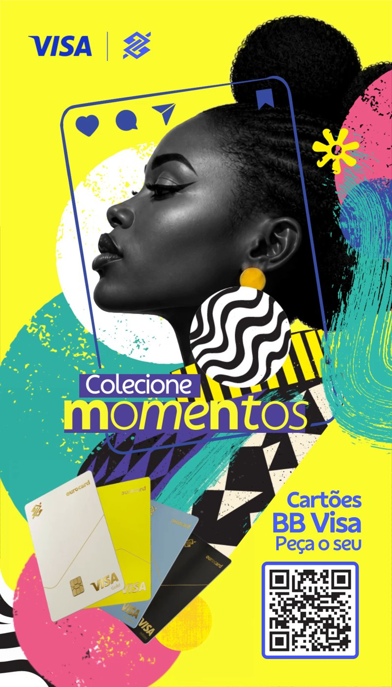

Strategy that moves. From brief to results.
Creative strategy, art direction and motion design for brands.
See the cases
Cases
Na Praia Festival · Concept and motion system
 Banco do Brasil · Visa · Design system
Banco do Brasil · Visa · Design system
 Routo.IO · Concept, script and motion
Routo.IO · Concept, script and motion
 USE Àwúre · Brand design
USE Àwúre · Brand design
A whole stage in sync.
Banco do Brasil's campaign across 18 screens.
Banco do Brasil · Visa · Design system
50+ pieces in 48 hours.
Paris 2024 and World Cup 2026.
Routo.IO · Concept, script and motion
A launch film investors watched.
34 seconds, from script to final render.
USE Àwúre · Brand design
"It's for me," she said.
A customer, about the packaging.
CREATIVE STRATEGIST
ART DIRECTOR
MOTION DESIGNER
CREATIVE STRATEGIST
ART DIRECTOR
MOTION DESIGNER
One person.
Three job titles.
Brazilian, Latina and archer on Fridays.
Still dreaming of perfect briefs.